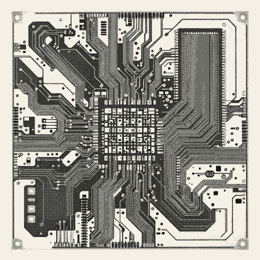
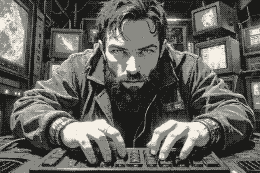
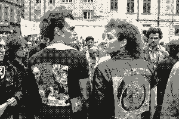

What is CLI-izdat?
CLI-izdat (or cli_izdat) is an ongoing study of the aesthetic and technological relationships between Eastern Bloc samizdat practices and modern command-line interfaces.
Visual and text references are collected in the are.na channel of the same name.

Who is typing?
Alég Lutohin – an educator and researcher with a focus on digitalization of historical memory.

Other Projects
- /Forgot Your Protest?
- /MemoActs Educational Programm
- /more at memosynth.net
